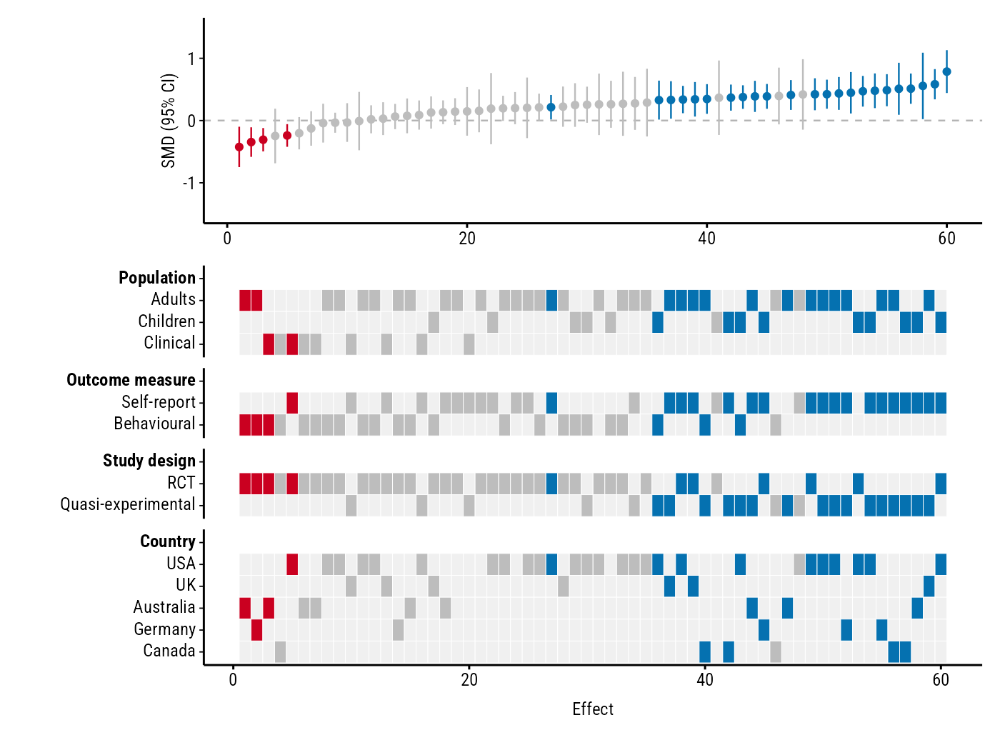

forestmap draws a forest plot with a heatmap of study properties. Each study in your meta-analysis is shown with its effect size and 95% confidence interval, sorted from smallest to largest. Underneath, a heatmap shows each study’s properties (population, design, country, …), so you can see at a glance whether studies with particular properties tend to find larger or smaller effects.
Installation
Install from r-universe:
install.packages(
"forestmap",
repos = c("https://shaheedazaad.r-universe.dev", "https://cloud.r-project.org")
)Example
You need a data frame with one row per study: its effect size, its sampling variance (or standard error, or 95% CI bounds), and one column per study property: a factor for categories such as study design, or a number such as sample size. NA means the study doesn’t report that property.
library(forestmap)
head(forestmap_example)
#> study smd vi n population outcome design
#> 1 Wang 2005 0.470 0.01581 253 Children <NA> RCT
#> 2 Hughes 2013 0.261 0.03704 108 Children Behavioural RCT
#> 3 Rossi 2005 0.510 0.04545 88 Adults Self-report Quasi-experimental
#> 4 Baker 2006 0.410 0.01493 268 Adults <NA> Quasi-experimental
#> 5 Hughes 2008 0.786 0.03077 130 Children Self-report RCT
#> 6 Martin 2023 0.260 0.06349 63 Adults <NA> RCT
#> country
#> 1 USA
#> 2 <NA>
#> 3 Canada
#> 4 Australia
#> 5 USA
#> 6 USATell plot_forestmap() which columns are which. Name the properties to set the headings shown in the plot.
plot_forestmap(
forestmap_example,
es = "smd",
vi = "vi",
moderators = c(
"Population" = "population",
"Outcome measure" = "outcome",
"Study design" = "design",
"Country" = "country",
"Sample size" = "n"
),
y_label = "SMD (95% CI)"
)
Blue studies have a confidence interval entirely above zero, red ones entirely below, and grey ones include zero. In this example, every study with a negative effect is an RCT, while the largest positive effects come mostly from quasi-experimental studies using self-report measures.
Sample size is a number, so it gets a single row: the taller a study’s bar, the larger the study, from 43 to 593 participants.
You can change the font, colours, text size, layout and more: see the articles. Saving is up to you, e.g.:
p <- plot_forestmap(...)
ggplot2::ggsave("forestmap.png", p, width = 7, height = 5.25, dpi = 300)